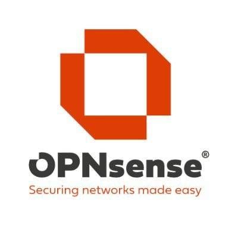
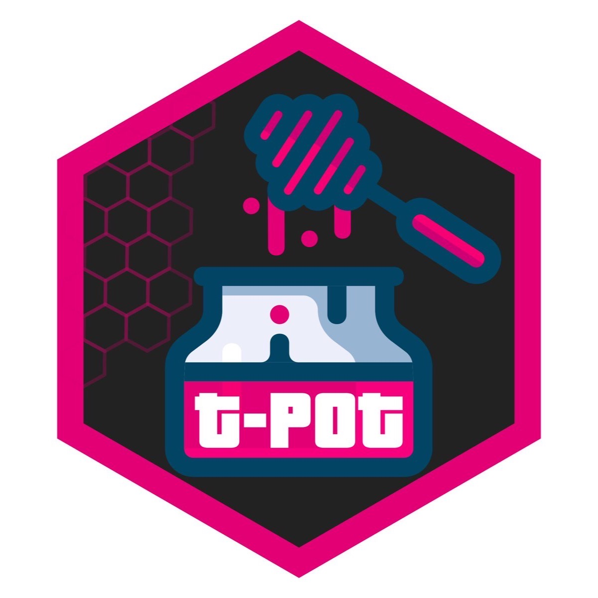
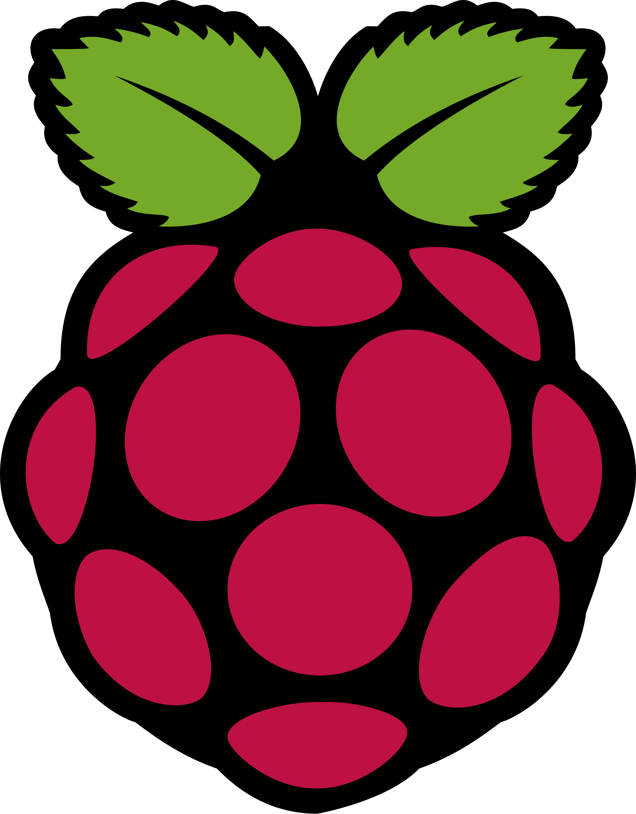

Below are just a few of the projects and technologies I make use of in my free time!

Proxmox
A 3-node clustered homelab hypervisor running 42 CPU cores, 150GB RAM, and 7TB of storage, hosting 4 LXC containers and 3 VMs.

Docker
Used across the homelab to run key services including a Unifi network controller, Pi-hole ad blocker, Uptime Kuma for monitoring, and Paperless for document management.

Linux
Daily-used OS across the homelab running Proxmox and Ubuntu Server, as well as on a personal laptop running Arch Linux.

OPNsense Router
A self-hosted open-source router deployed within the home network, providing hands-on experience with routing and network configuration.

Ubiquiti
A home Wi-Fi upgrade using 2 Ubiquiti Access Points and a 16-port Pro Max PoE switch to replace an inadequate ISP router, with plans to add a Dream Machine Pro.

T-Pot Honeypot
Deployed and analysed a T-Pot honeypot to monitor real-world attack traffic. Gained insight into common attack vectors, threat actors, and malicious behaviour patterns through live data capture and visualisation via the built-in Kibana dashboard.

Facial Recognition (Raspberry Pi)
Developed and deployed a facial recognition system on a Raspberry Pi, leveraging computer vision libraries to identify and verify faces in real time — exploring practical applications in security and access control.
Digital Forensics (Autopsy)
Conducted a digital forensic investigation using Autopsy, analysing disk images to recover deleted files, examine metadata, and document findings — simulating a structured forensic workflow as used in real incident response.
OpenWRT
Deployed OpenWRT on compatible hardware to replace stock router firmware, gaining experience with custom routing, firewall rules, and advanced network configuration on an open-source platform.